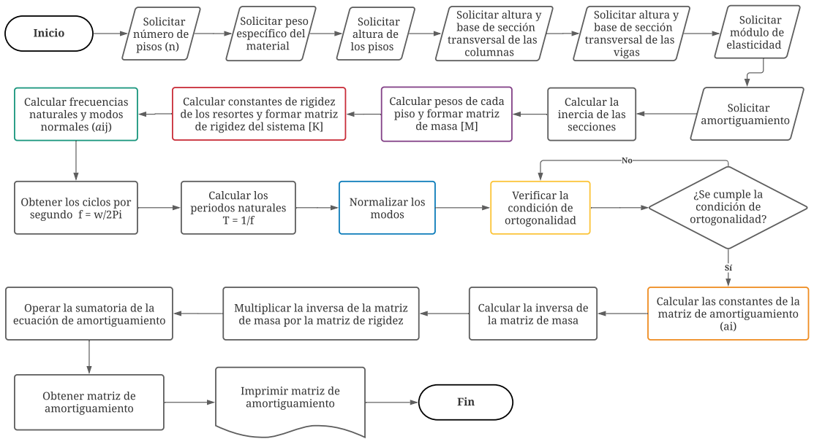
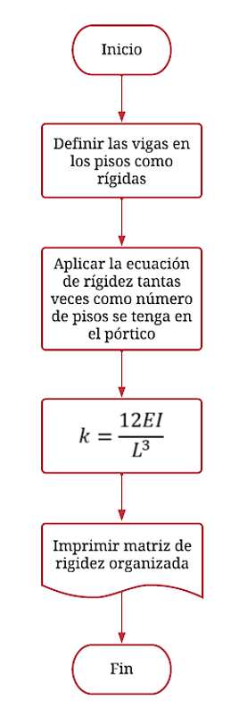
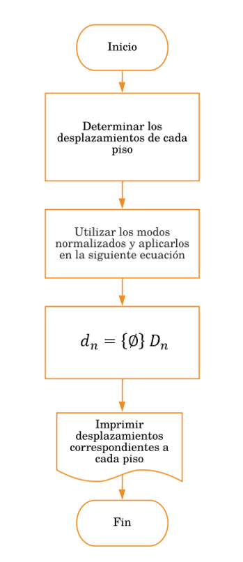

Metodología
Diagrama de flujo del algoritmo para la primera parte del programa
En la siguiente figura se da a conocer el diagrama de flujo general de la primera parte del programa que corresponde al procedimiento de obtención de la matriz de amortiguamiento, como se puede observar, existen algunos cuadros con colores que tienen su respectivo procedimiento, el cual se explica en diagramas de flujo posteriores.

Cálculo de la matriz de masa

Cálculo de constantes de rigidez de los resortes

Cálculo de frecuencias naturales y modos normales
Obtenidos los valores de las frecuencias naturales, se procede a calcular los ciclos por segundo del sistema.
Donde,
ω: frecuencias naturales del sistema
f: ciclos por segundo
A continuación, se calculan los periodos naturales.
Donde,
T: periodos naturales del sistema
Normalización de los modos normales
Condición de ortogonalidad
Cálculo de constantes de la matriz de amortiguación
Ahora bien, se deben realizar los procesos que se describen en la siguiente ecuación para obtener la matriz de amortiguación.
Donde,
[C]: matriz de amortiguación
[M]-1: matriz inversa de masa
[K]: matriz de rigidez
ai: constantes de la matriz de amortiguación
Diagrama de flujo del algoritmo para la segunda parte del programa
En la siguiente figura se da a conocer el diagrama de flujo general de la segunda parte del programa que corresponde al procedimiento para obtener las fuerzas y desplazamientos, como se puede observar, existen algunos cuadros con colores que tienen su respectivo procedimiento, el cual se explica en diagramas de flujo posteriores.

Cálculo del factor de participación

Cálculo de la masa que actua en cada piso
Cálculo de la aceleración del portico
Cálculo de la aceleración de cada piso
Cálculo de las fuerzas actuantes de cada piso
Cálculo de los desplazamientos espectrales
Cálculo de los desplazamientos en cada piso

Sofía Liliana Getial Rivera - Kevin Alejandro Pantoja Zambrano / Universidad Mariana 2021